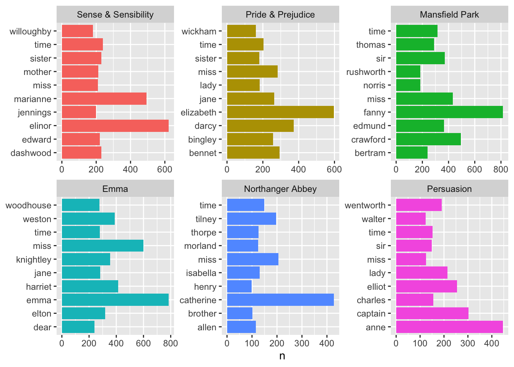

# A tibble: 12 × 7
word `Sense & Sensibility` `Pride & Prejudice` Mansf…¹ Emma North…² Persu…³
<chr> <int> <int> <int> <int> <int> <int>
1 to 4116 4162 5475 5239 2244 2808
2 the 4105 4331 6206 5201 3179 3329
3 of 3571 3610 4778 4291 2358 2570
4 and 3490 3585 5438 4896 2306 2800
5 her 2543 2203 3082 2462 1562 1203
6 a 2092 1954 3099 3129 1540 1594
7 i 1998 2065 2358 3177 1285 0
8 in 1979 1880 2512 0 1268 1389
9 was 1861 1843 2651 2398 1114 1337
10 it 1755 0 2272 2528 1106 0
11 she 0 1695 0 2340 0 1146
12 had 0 0 0 0 0 1187
# … with abbreviated variable names ¹`Mansfield Park`, ²`Northanger Abbey`,
# ³Persuasion
Demo: Let’s do better, without the “stop words”.
stop_words
# A tibble: 1,149 × 2
word lexicon
<chr> <chr>
1 a SMART
2 a's SMART
3 able SMART
4 about SMART
5 above SMART
6 according SMART
7 accordingly SMART
8 across SMART
9 actually SMART
10 after SMART
# … with 1,139 more rows
Without stop words:
austen_words |>anti_join(stop_words) |>count(book, word, sort =TRUE) |>group_by(book) |>slice_head(n =10) |>ggplot(aes(y = word, x = n, fill = book)) +geom_col(show.legend =FALSE) +facet_wrap(~book, scales ="free") +labs(y =NULL)
Joining, by = "word"

With better ordering:
austen_words |>anti_join(stop_words) |>count(book, word, sort =TRUE) |>group_by(book) |>slice_head(n =10) |>ggplot(aes(y =reorder_within(word, n, book), x = n, fill = book)) +geom_col(show.legend =FALSE) +facet_wrap(~book, scales ="free") +scale_y_reordered() +labs(y =NULL)
Joining, by = "word"
Bigram frequencies
An n-gram is a contiguous series of \(n\) words from a text; e.g., a bigram is a pair of words, with \(n = 2\).
Demo: Split the text column into bigram tokens.
austen_bigrams <- austen_books |>unnest_tokens(bigram, text, token ="ngrams", n =2) |>filter(!is.na(bigram))austen_bigrams
# A tibble: 662,783 × 2
book bigram
<fct> <chr>
1 Sense & Sensibility sense and
2 Sense & Sensibility and sensibility
3 Sense & Sensibility by jane
4 Sense & Sensibility jane austen
5 Sense & Sensibility chapter 1
6 Sense & Sensibility the family
7 Sense & Sensibility family of
8 Sense & Sensibility of dashwood
9 Sense & Sensibility dashwood had
10 Sense & Sensibility had long
# … with 662,773 more rows
Your turn: Visualize the frequencies of top 10 bigrams in each of Jane Austen’s books.
austen_bigrams |>count(book, bigram, sort =TRUE) |>group_by(book) |>slice_head(n =10) |>ggplot(aes(y =reorder_within(bigram, n, book), x = n, fill = book)) +geom_col(show.legend =FALSE) +facet_wrap(~book, scales ="free") +scale_y_reordered() +labs(y =NULL)
Verbs that follow she or he
First, let’s define the pronouns of interest:
pronouns <-c("he", "she")
Demo: Filter the dataset for bigrams that start with either “she” or “he” and calculate the number of times these bigrams appeared.
# A tibble: 1,490 × 3
word1 word2 total
<chr> <chr> <int>
1 she had 1405
2 she was 1309
3 he had 965
4 he was 844
5 she could 767
6 he is 385
7 she would 348
8 she is 311
9 he could 281
10 he would 244
# … with 1,480 more rows
Discussion: What can we do next to see if there is a difference in the types of verbs that follow “he” vs. “she”?
Answers may vary.
Demo: Which words have about the same likelihood of following “he” or “she” in Jane Austen’s novels?
# A tibble: 158 × 4
word2 she he logratio
<chr> <dbl> <dbl> <dbl>
1 ought 0.00548 0.00561 -0.0330
2 walked 0.00369 0.00379 -0.0385
3 would 0.0416 0.0404 0.0413
4 loves 0.000953 0.000989 -0.0541
5 too 0.000953 0.000989 -0.0541
6 paused 0.00155 0.00148 0.0614
7 turned 0.00310 0.00297 0.0614
8 very 0.00155 0.00148 0.0614
9 had 0.167 0.159 0.0724
10 listened 0.00226 0.00214 0.0784
# … with 148 more rows
Demo: Which words have different likelihoods of following “he” or “she” in Jane Austen’s novels?
word_ratios |>mutate(abslogratio =abs(logratio)) |>group_by(logratio <0) |>top_n(15, abslogratio) |>ungroup() |>mutate(word =reorder(word2, logratio)) |>ggplot(aes(word, logratio, color = logratio <0)) +geom_segment(aes(x = word, xend = word,y =0, yend = logratio ),linewidth =1.1, alpha =0.6 ) +geom_point(size =3.5) +coord_flip() +labs(x =NULL,y ="Relative appearance after 'she' compared to 'he'",title ="Words paired with 'he' and 'she' in Jane Austen's novels",subtitle ="Women remember, read, and feel while men stop, take, and reply" ) +scale_color_discrete(name ="", labels =c("More 'she'", "More 'he'")) +scale_y_continuous(breaks =seq(-3, 3),labels =c("0.125x", "0.25x", "0.5x","Same", "2x", "4x", "8x" ) )
Sentiment analysis
One way to analyze the sentiment of a text is to consider the text as a combination of its individual words and the sentiment content of the whole text as the sum of the sentiment content of the individual words. This isn’t the only way to approach sentiment analysis, but it is an often-used approach, and an approach that naturally takes advantage of the tidy tool ecosystem.1
sentiments <-get_sentiments("afinn")sentiments
# A tibble: 2,477 × 2
word value
<chr> <dbl>
1 abandon -2
2 abandoned -2
3 abandons -2
4 abducted -2
5 abduction -2
6 abductions -2
7 abhor -3
8 abhorred -3
9 abhorrent -3
10 abhors -3
# … with 2,467 more rows
bigram_counts |>left_join(sentiments, by =c("word2"="word")) |>filter(!is.na(value)) |>mutate(sentiment = total * value) |>group_by(word1) |>arrange(desc(abs(sentiment))) |>slice_head(n =10)
# A tibble: 20 × 5
# Groups: word1 [2]
word1 word2 total value sentiment
<chr> <chr> <int> <dbl> <dbl>
1 he loved 16 3 48
2 he cried 11 -2 -22
3 he liked 10 2 20
4 he trusted 8 2 16
5 he bore 7 -2 -14
6 he smiling 7 2 14
7 he stopped 13 -1 -13
8 he delighted 4 3 12
9 he likes 5 2 10
10 he smiled 5 2 10
11 she cried 44 -2 -88
12 she loved 17 3 51
13 she liked 17 2 34
14 she trusted 13 2 26
15 she resolved 10 2 20
16 she rejoiced 5 4 20
17 she likes 8 2 16
18 she lost 5 -3 -15
19 she determined 6 2 12
20 she dreaded 6 -2 -12